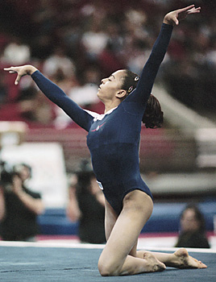

Tasha Schwikert (USA)
2000 Olympian
2001 and 2002 US Champion
2003 World Championships Team Gold Medalist

Medal Total
World Championships: 1 Gold, 1 Bronze
Tasha was born on November 21,
1984, in Las Vegas. She was coached by Cassie Rice at Gymcats.
Originally an alternate on the 2000 Olympic team, she ended up competing due to
injuries to two of her teammates. A strong, confident gymnast, Tasha was a
two-time US all-around champion and a two-time world championships team member.
Tasha earned a full scholarship to UCLA and won the NCAA all-around title in her
freshman and senior years. Younger sister Jordan was also a member of the
UCLA team.
Competition
Results
1995
JO Nationals (age 9-12): 9th AA
1996
JO Nationals (age 9-12): 3rd AA
1998
Avignon Jr.
International: 4th AA
Jr. American Classic: 8th AA
Jr. US Championships: 15th AA
Jr. US Classic: 7th AA
1999
American Classic: 9th AA
Como Cup: 2nd AA
US Championships: 9th AA
US Classic: 2nd AA
US World Team Trials: 7th AA
2000
American Classic: 1st AA
American Cup: 4th AA
Aussie Haircare Invitational: 3rd AA
Olympic Games: 4th Team
RCA Gymnastics Challenge: 5th AA
US Classic: 33rd AA
US Olympic Trials: 9th AA
2001
Jr. US Championships: 7th AA
PAGU Championships: 1st Team, 1st AA, 1st UB, 2nd V, 2nd B, 2nd FX
Reese's Cup: 1st Team
US Championships: 1st AA
US Classic: 1st AA
World Championships: 3rd Team, 5th AA, 5th B
2002
American Classic: 1st AA
American Cup: 1st AA
Pacific Alliance Championships: 1st AA, 1st B, 1st FX, 2nd UB, 5th V
US Championships: 1st AA
US Classic: 2nd AA
2003
US Championships: 2nd AA
World Championships: 1st Team
2004
US Championships: 9th AA
US Olympic Trials: 8th AA
2005
NCAA Championships: 4th Team, 1st AA, 3rd UB, 5th B
2006
NCAA Championships: 11th AA
2007
NCAA Championships: 2nd UB
2008
NCAA Championships: 1st AA, 1st UB, 2nd FX, 8th V
This page was created on May 22,
2009.
© Gymn Forum